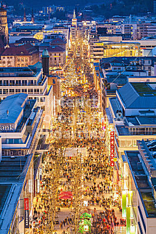

Mercedes-Benz Museum:

El Mercedes-Benz Museum es uno de los lugres predilectos por los visitantes, ahi encontraras desde la invencion del automovil hasta las ultimas tecnologias de automovilismo, recorriendo paralelamente la historia. Considerando arquitectonicamente el espectacular edificio donde se hubica.
ir a la pagina de Mercedes-Benz Museum
ir al mapa
Porsche Museum:

El Porsche Museum esta hubicado en un moderno y futurista edificio, en el cual encontraras todos los autos relacionados a dicha marca, contando tambien con exhibiciones de automoviles de la marca Volkswagen de la cual tambien Ferdinand Porsche fue Fundador.
ir al la pagina de Porsche Museumir al mapa
Wilhelma Zoologisch-Botanischer Garten:

El Wilhelma Zoologisch-Botanischer Garten, es un hermoso parque zoologico y un jardin botanico que se encuentran juntos en el mismo recinto, el cual es, ademas, un lugar historico, pues fue construido en 1842-1853, por orden del rey Wilhelm I de Wurttemberg, a modo de jardin arabe. El "Wilhelma" es, sin duda, uno de los parques zoologicos y jardines botanicos mas bonitos de Europa. Dispone de mas de 9.000 animales pertenecientes a mas de 1.000 especies distintas. El gran acuario despierta especialmente el interes de los visitantes del "Wilhelma", asi como el recinto de los cocodrilos, la moderna casa de los chimpances, los recintos de los osos pardos y polares, y una fielmente reproducida jungla amazonica, con animales y plantas procedentes de las selvas tropicales del Amazonas. En el jardin botanico destaca la fabulosa coleccion de orquideas y magnolias.
ir a la pagina del Wilhelma Zoologisch-Botanischer Garten
ir al mapa
konigstrasse y Schlossplatz:

La Konigstrasse (La calle del rey) es una de las calles peatonal y comercial mas transitadas de Alemania. Con cerca de 1,2 Kilometros de largo cuenta con locales comerciales de todo tipo y es el lugar perfecto para irse de compras en el corazon de Stuttgart. La Schlossplatz (plaza del Castillo) esta Hubicada en el centro de la Konigstrasse y frente a la entrada principal del castillo nuevo, construido entre 1746 y 1807. Fue renovada por completo 1977 y es la plaza mas grande de Stuttagart centro.
ir a informacion de Schlossplatzir al mapa

La Killesbergturm (torre del monte Killes) es una torre de 40,3 metros de altura y contruida en el 2001. Esta extraordinaria torre esta abierta al publico y se hubica en Hoehenpark Killesberg, el cual cuenta con preciosos jardines con bellas flores y algunos animales al aire libre como flamencos entre otros. El parque se conecta con el Schlossgartenanlagen y el Rosensteinpark (ambos parques) haciendo una Zona verde en forma de U muy grande, ideal para recorrerla en bicicleta.
ir a la pagina de la Killesbergturmir al mapa
La Fernsehturm Stuttgart ( la torre de television de Stuttgart) es una torre de 216,8 metros de altura hasta el extrmo de la antena, que tiene una gran importancia al ser la primera torre de TV del mundo costruida de hormigon, siendo imitada o tomada como modelo en la mayoria de los paises del mundo. La torre esta abierta al publico y perfectamente comunicada con el transporte publico.
ir a la pagina de la Fernsehturmir al mapa
La Johanneskirche (iglesia de san Juan) es una iglesia evangelica contruida entre 1864 y 1876 con estilo neogotico. La particularidad de esta iglesia es que no tiene aguja ya que fue destruida en la segunda guerra mundial, decidiendose en la reconstruccion dejarla sin el chapitel a modo de memorial o recordatorio de la guerra. La Feuerseeplatz(plaza del lago de fuego) es una interesante plaza alrrededor de un laguito, el cual esta en forma de media luna alrrededor de la Johanneskirche. En el lago se pueden apreciar cisnes y patos, haciendo de esta pintoresca plaza un lugar para muchos romatico.
ir a la pagina de la iglesia
ir al mapa